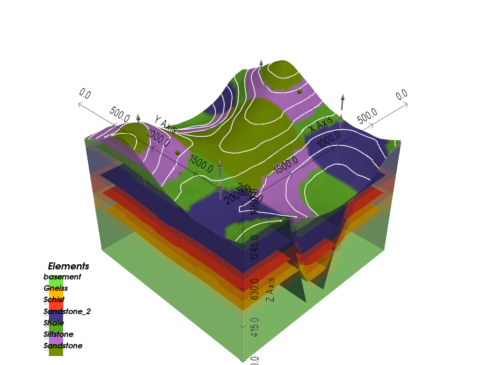
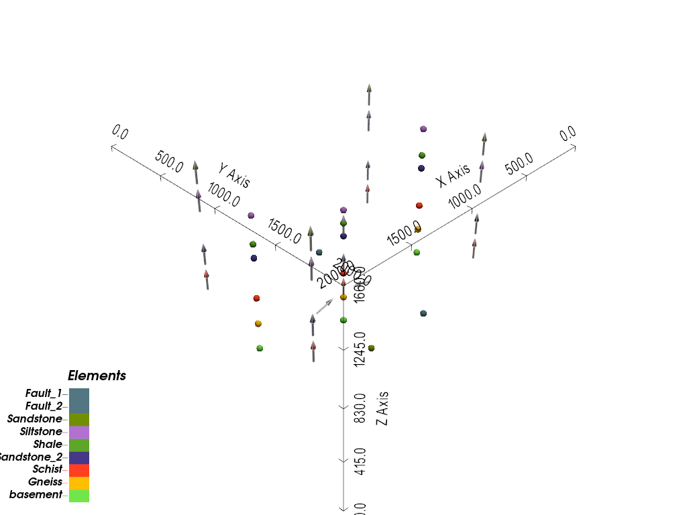
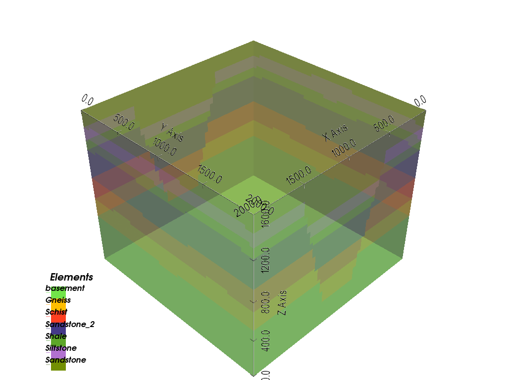
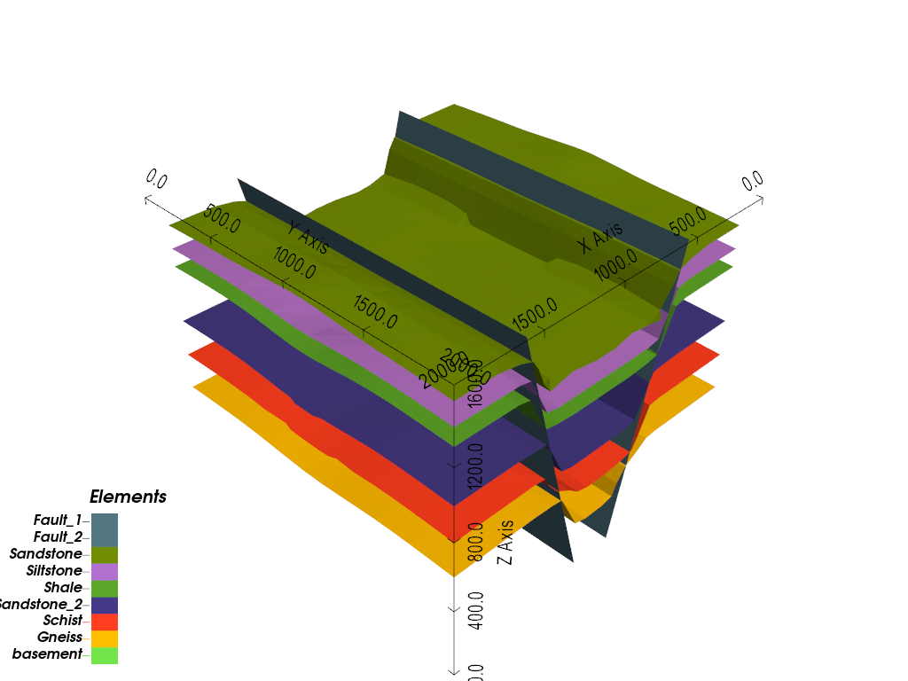
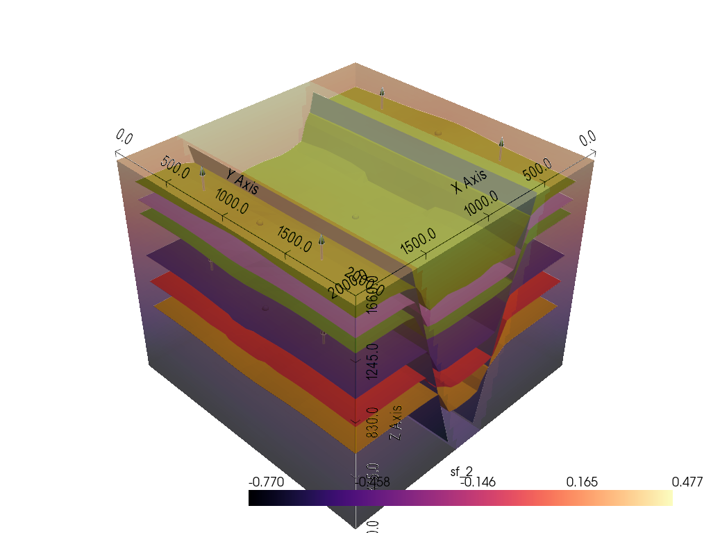
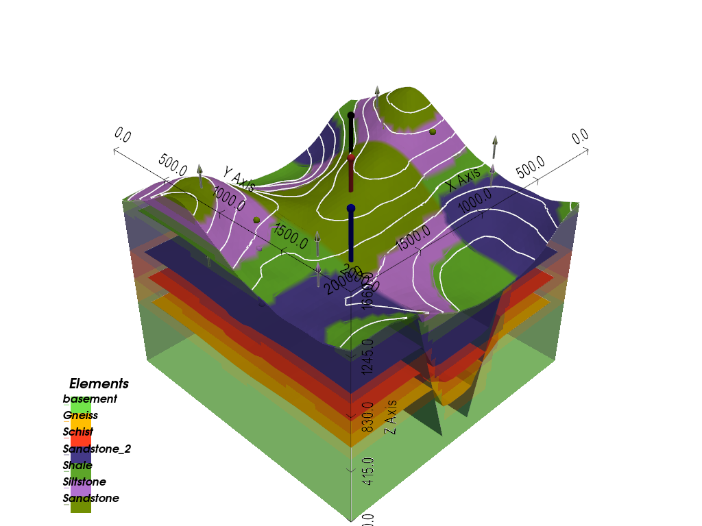

Note
Go to the end to download the full example code.
3D Visualization: Interactive Model and Custom Plots¶
A tour of gempy_viewer’s 3D plotting options
This tutorial builds a faulted graben model with topography, then goes through
plot_3d’s main options: the full model, the input data alone, the solid lithology
volume versus the layer-boundary surfaces, and a scalar field. It finishes by
overlaying custom 3D data (boreholes) on top of a plot_3d result.
import numpy as np
import pyvista as pv
import gempy as gp
import gempy_viewer as gpv
np.random.seed(1234)
Model setup¶
This model is a graben: two parallel normal faults offsetting the same stack of stratigraphic layers, producing a down-dropped block between them – a distinctly 3D structure that’s worth looking at from more than one angle.
data_path = 'https://raw.githubusercontent.com/cgre-aachen/gempy_data/master/'
path_to_data = data_path + "/data/input_data/lisa_models/"
geo_model = gp.create_geomodel(
project_name="Graben",
extent=[0, 2000, 0, 2000, 0, 1600],
resolution=[50, 50, 50],
refinement=6,
importer_helper=gp.data.ImporterHelper(
path_to_orientations=path_to_data + "foliations7.csv",
path_to_surface_points=path_to_data + "interfaces7.csv",
hash_surface_points="8c72af50fc56389b620c6458a6af23915b121b5e655b3ce179a790636dc529a5",
hash_orientations="87cf30b08b5be03b38c5e6d288fa7bb8855263704efb62c7c3cd77673eaae96d"
)
)
gp.map_stack_to_surfaces(
gempy_model=geo_model,
mapping_object={
"Fault_1" : 'Fault_1',
"Fault_2" : 'Fault_2',
"Strat_Series": ('Sandstone', 'Siltstone', 'Shale', 'Sandstone_2', 'Schist', 'Gneiss')
}
)
gp.set_is_fault(geo_model, ['Fault_1', 'Fault_2'])
Surface points hash: 8c72af50fc56389b620c6458a6af23915b121b5e655b3ce179a790636dc529a5
Orientations hash: 87cf30b08b5be03b38c5e6d288fa7bb8855263704efb62c7c3cd77673eaae96d
A random topography gives the 3D view a real surface to drape the geological map over, and something for the boreholes to start from later on:
gp.set_topography_from_random(
grid=geo_model.grid,
fractal_dimension=1.2,
d_z=np.array([1000, 1600]),
topography_resolution=np.array([50, 50])
)
gp.compute_model(geo_model)
Active grids: GridTypes.DENSE|TOPOGRAPHY|NONE
Setting Backend To: AvailableBackends.PYTORCH
GPU enabled. Using device: cuda
GPU device count: 1
Current GPU device: 0
Chunking done: 19 chunks
Chunking done: 21 chunks
Chunking done: 10 chunks
Plotting the model¶
plot_3d opens a real interactive 3D view – rotate, zoom, and pan it like any
other PyVista plot. With no other arguments it shows the lithology volume, the
layer-boundary surfaces, the input data, and – since this model now has a
topography – the geological map draped over it:
gpv.plot_3d(geo_model)

<gempy_viewer.modules.plot_3d.vista.GemPyToVista object at 0x7f3eea0b3770>
Data only¶
Set show_lith=False and show_boundaries=False to see just the input data:
surface points as spheres and orientations as arrows, both colored per structural
element, with no surfaces or topography in the way:
gpv.plot_3d(geo_model, show_lith=False, show_boundaries=False, show_data=True, show_topography=False)

<gempy_viewer.modules.plot_3d.vista.GemPyToVista object at 0x7f3eea0b2350>
Volume vs. surfaces¶
show_lith and show_boundaries control two independent representations of the
same model. show_lith renders the solid, semi-transparent lithology volume –
useful for seeing the layering through the outside of the block:
gpv.plot_3d(geo_model, show_lith=True, show_boundaries=False, show_data=False, show_topography=False)

<gempy_viewer.modules.plot_3d.vista.GemPyToVista object at 0x7f3eea0b3770>
show_boundaries instead renders just the layer-boundary surfaces on their own,
with nothing filling the space between them:
gpv.plot_3d(geo_model, show_lith=False, show_boundaries=True, show_data=False, show_topography=False)

<gempy_viewer.modules.plot_3d.vista.GemPyToVista object at 0x7f3eea0b2350>
Scalar field¶
As in the 2D tutorial, gempy solves one implicit scalar field per structural series.
In 3D it’s addressed by name rather than index: active_scalar_field='sf_N', where
N is the series’ position in map_stack_to_surfaces (0-indexed). This model has
three series – sf_0 (Fault_1), sf_1 (Fault_2), and sf_2
(Strat_Series, the stratigraphic layers, the more interesting one to look at):
gpv.plot_3d(
geo_model,
active_scalar_field='sf_2',
show_scalar=True,
show_lith=False,
show_topography=False
)

<gempy_viewer.modules.plot_3d.vista.GemPyToVista object at 0x7f3eea0b3770>
Overlaying custom data: boreholes in 3D¶
plot_3d returns a GemPyToVista object exposing the underlying PyVista
Plotter as .p – once retrieved, adding custom 3D geometry on top is plain
PyVista, the same idea as overlaying a borehole on a 2D section. Passing show=False
builds the plot without displaying it yet, so custom geometry can be added first; the
final .show() then opens the same real interactive view as every other plot in
this tutorial, boreholes included. Each borehole below is a vertical line from the
model’s top down to its own depth, drawn as a tube with a sphere at the collar:
p = gpv.plot_3d(geo_model, show=False)
z_top = geo_model.grid.regular_grid.extent[5]
boreholes = [
{'name': 'Borehole A', 'xy': (600, 600), 'z_bottom': 400, 'color': 'black'},
{'name': 'Borehole B', 'xy': (1000, 1000), 'z_bottom': 100, 'color': 'firebrick'},
{'name': 'Borehole C', 'xy': (1400, 1400), 'z_bottom': 700, 'color': 'darkblue'},
]
for bh in boreholes:
x, y = bh['xy']
collar = (x, y, z_top)
bottom = (x, y, bh['z_bottom'])
tube = pv.Line(collar, bottom).tube(radius=15)
p.p.add_mesh(tube, color=bh['color'])
p.p.add_mesh(pv.Sphere(radius=25, center=collar), color=bh['color'])
p.p.show()
# sphinx_gallery_thumbnail_number = -1

Total running time of the script: (0 minutes 7.695 seconds)